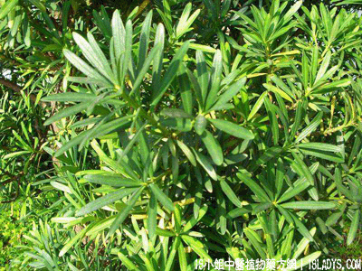

(本文解释权归中药材天地网兄弟站-18小姐中医植物药方网所有,如需转载请注明出处)
江南柏(中药材植物名:罗汉松)(植物科目:罗汉松科)

别名：罗汉松、江南侧柏。
植物名：罗汉松。
生长环境：本品为乔木。生于山地的树林中，或栽培于公园住宅旁。
分布：我国长江以南各省，广东中部、北部均有。本种与常见栽培供欣赏用之“短叶罗汉松”系灌木状，叶子簇生状，长约4～7厘米，可区别。
入药部分：叶。
采集期：全年。
自采地点：家种。
性味：性平、味淡。
功能：止咳、止血、散瘀。
主治、用量和用法：内伤咳血，配伍用。
验方：（治内伤咳血方）江南柏5钱、红菱根5钱、牛大力5钱、龙船花根5钱、五爪龙根5钱、清水四碗，煎成一碗服。
（方解）江南柏止咳散瘀；牛大力、五爪龙止咳除痰；红菱根顺气除痰、清肝肺热；龙船花散瘀止痛。合成除痰、止咳、凉血、止血、行气、理肺之剂。对内伤咳嗽、咯血甚验。
（方歌）内伤咳血莫须愁，江南柏下大力牛，五爪龙船红菱蔃，散瘀除痰血自收。
(本文解释权归中药材天地网兄弟站-18小姐中医植物药方网所有,如需转载请注明出处)